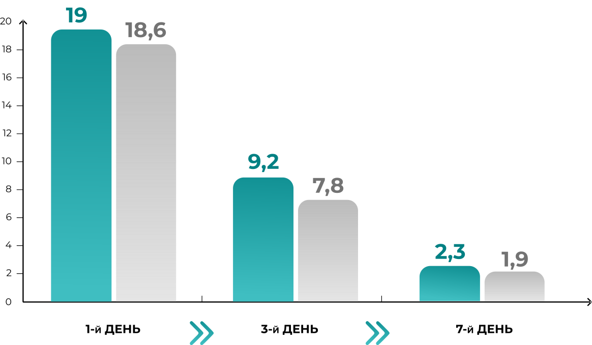

ЕРГОФЕРОН

та
Озельтамівір
чинять співставний вплив навираженість симптомів інтоксикації
ДИНАМІКА СИМПТОМІВ ІНТОКСИКАЦІЇ У ХВОРИХ НА ГРИП А ЧИ В (ДНІ СПОСТЕРЕЖЕННЯ)


Ефективність
Ергоферону
в
лікуванні грипу співставна з
озельтамівіром, за
результатами клінічного
дослідження, зареєстрованного
на офіційному ресурсі (ClinicalTrials.gov), Національної медичної бібліотеки США.
лікуванні грипу співставна з
озельтамівіром, за
результатами клінічного
дослідження, зареєстрованного
на офіційному ресурсі (ClinicalTrials.gov), Національної медичної бібліотеки США.
Ергоферон
Озельтамівір